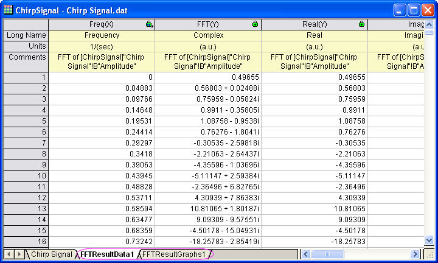

FFT und IFFT
FFT-and-IFFT
Zusammenfassung
Die FFT (Fast-Fourier-Transformation) kann ein Signal aus aus der Zeitdomäne in die Frequenzdomäne konvertieren. Die IFFT (Inverse FFT) konvertiert ein Signal dagegen aus der Frequenzdomäne in die Zeitdomäne. Die FFT von einem nicht periodischen Signal verursacht einen sogenannten Leck-Effekt (Leakage-Effekt) im Ergebnisfrequenzspektrum. Origin bietet mehrere Fenster, mit denen eine FFT durchgeführt werden kann, die diesen Leck-Effekt unterdrückt.
Was Sie lernen werden
In diesem Tutorial lernen Sie, wie Sie:
- eine FFT für ein Signal mit verschiedenen Fenstern durchführen.
- das ursprüngliche Signal mit dem Spektrum wiederherstellen.
- eine FFT für ein Diagramm mit dem Minitool FFT durchführen.
Minitool FFT
Origins Minitool FFT platziert ein rechteckiges Objekt in der Zeichnung eines Signals, in dem Sie eine FFT auf die Daten, die sich in dem Rechteck befinden, durchführen können. Dies ist praktisch, wenn Sie schnell sehen wollen, welchen Effekt die FFT auf die Daten hat.
Das folgende Tutorial zeigt, wie Sie das Minitool FFT auf die Zeichnung des Signals anwenden.
- Öffnen Sie eine neue Arbeitsmappe und importieren Sie die Daten aus dem <Origin-Verzeichnis>\Samples\Signal Processing\Chirp Signal.dat.
- Markieren Sie Spalte B und erstellen Sie ein Liniendiagramm, indem Sie im Menü Zeichnen: Linie: Liniendiagramm wählen.
- Wählen Sie bei aktiver Zeichnung im Menü Minitools: FFT, um das Minitool FFT zu öffnen.
- Klicken Sie bei unveränderten Standardeinstellungen auf die Schaltfläche OK, um das Rechteck der grafischen Datenauswahl (ROI) in dem Diagramm zu platzieren.
- Beachten Sie, dass das Diagramm FFTPREVIEW erstellt wird, das die FFT-Ergebnisse für die ausgewählten Daten zeigt.
- Sie können das Rechteck nach links und rechts verschieben, um verschiedene Teile der Daten abzudecken. Sie können auch die Breite des Rechtecks ändern, um eine unterschiedlich große Anzahl von Datenpunkten einzuschließen. Die Neupositionierung oder Größenveränderung der grafischen Datenauswahl (ROI) verändert das Diagramm FFTPREVIEW.
FFT
In diesem Beispiel wird das Fenster gewechselt, um den Leck-Effekt des Spektrums zu unterdrücken.
- Verwenden Sie die gleichen Daten wie im Abschnitt zum Minitool FFT oben.
- Markieren Sie Spalte B und wählen Sie dann im Menü Analyse: Signalverarbeitung: FFT: FFT.... Der Dialog Signal Processing\FFT: fft1 wird geöffnet.
- Aktivieren Sie unten im Dialog das Kontrollkästchen Automatische Vorschau, um das Ergebnis im rechten Bedienfeld anzuzeigen. Wechseln Sie das Fenster in Blackman und behalten Sie die anderen Standardeinstellungen bei. Im rechten Bedienfeld ist ein schmales, spitzes Peakspektrum für die Amplitude zu erkennen. Das Blackman-Fenster unterdrückt den Leck-Effekt im Spektrum sehr gut.
- Klicken Sie auf OK, um die Ergebnisdaten und -diagramme zu erzeugen.
- 
IFFT
Dieses Beispiel zeigt, wie das Signal aus dem Ergebnis der FFT wiederhergestellt wird. Um das ursprüngliche Ergebnis wiederherzustellen, müssen die Einstellungen für FFT und IFFT gleich sein, d.h., der Spektrumstyp muss zweiseitig und das Fenster muss ein Rechteck sein.
- Beginnen Sie mit den Ergebnissen der FFT oben und klicken Sie auf die grünen Schlösser. Wählen Sie Parameter ändern im Menü, um den Dialog wieder zu öffnen.
- Wie oben bereits erwähnt, muss für das Fenster ein Rechteck festgelegt und der Spektrumstyp sollte zweiseitig sein. Ändern Sie also diese beiden Einstellungen.
- Klicken Sie auf OK, und die Ergebnisse werden modifiziert.
- Gehen Sie zum Arbeitsblatt FFTResultData1. Eine Spalte ist Komplex, eine Spalte ist Real und eine ist Imaginär. In diesem Fall können sie die Spalte Komplex verwenden (die Spalten Real und Imaginär können auch verwendet werden). Markieren Sie sie und wählen Sie im Menü Analyse: Signalverarbeitung: FFT: IFFT, um den Dialog Signal Processing\FFT: ifft1 zu öffnen. (Beachten Sie, dass, wenn die Spalten Real und Imaginär verwendet werden, die erste Zeile für Eingabe die Spalte Real sein sollte und das Feld Imaginär zu Spalte Imaginär weisen sollte.) Aktivieren Sie unten das Kontrollkästchen Automatische Vorschau, um das Ergebnis im rechten Bedienfeld in der Vorschau zu sehen.
- Übernehmen Sie die anderen Standardeinstellungen und klicken Sie auf die Schaltfläche OK.
- Jetzt ist es möglich, einen Vergleich zu ziehen zwischen dem IFFT-Ergebnis (im Arbeitsblatt IFFTResultData1) und den ursprünglichen Signaldaten. Wie im Bild unten zu sehen, sind sie fast gleich.